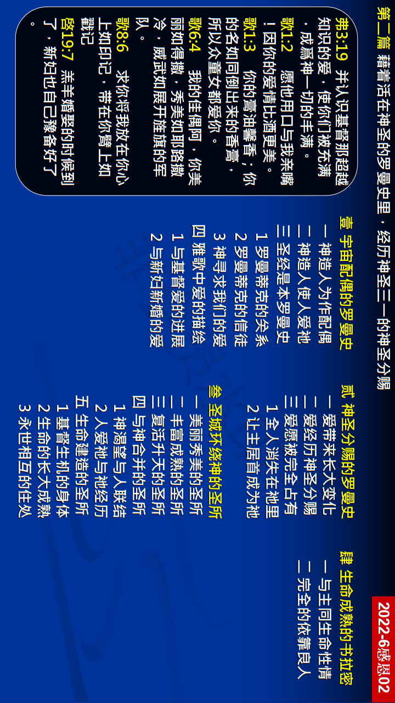

第二篇 借着活在神圣的罗曼史里，经历神圣三一的神圣分赐
前言
神的经纶是深奥、深邃的，也是奇妙、奥秘 的，神心头的愿望乃是祂要与人有爱的关系。 祂爱人，甚至这爱让祂成为人，来与人亲近， 在祂的死与复活后，祂就成为赐生命的灵， 进到人里面，使祂与人成为一，也使人与祂 成为一，这就是神经纶的精髓。神与人之间 乃是一个爱的故事，神与人的关系乃是罗曼 蒂克的关系。神来追求人，好使人能接受神 温和的餧养。(何十一 4。)神将祂自己分赐到 我们里面的路乃是爱。爱乃是最短的路径！
真理要点(鸟瞰)
壹 一对宇宙的配偶：①神与人的罗曼史②神创造人的目的③雅歌是圣经摘要 ④爱的图画的描绘
贰 经历分赐的凭借：①爱主就必有长进②佳偶生命的长进③全人摆在所爱的
叁 属天圣所的表征：①作神居所的美丽②在升天里过生活③在至圣所过生活④用上好的爱爱主⑤与身体建造有关
肆 书拉密女的表征：①神圣启示的高峯②达到高峯的祕诀
经历应用(操练)
我们在主的恢复里看重祷读主的话。我们不要读圣经而 不以活的方式来接触主。我们必须谨防读经而不祷告、 不接触主。倘若我们在主的话里接触主，我们就要在经 历中实际地与祂合一，然后我们将成为祂的配偶。藉着 爱主作我们的良人，并与祂合一，甚至成为祂的佳偶， 祂的话就要成为我们生命的供应。
负担
经历三一神将祂自己分赐到我们里面，并亲自与我们调和，是何等的奇妙！对有些人来说，这似乎是个梦。如果这是梦，我就要说，所有的基督徒都需要这样的梦。如果你从来没有经历这梦，你可能是个恪守宗教的基督徒，却不是按着神新约经纶的基督徒。我们能见证，这样经历三一神使我们成为神人，就是被三一神充满并且浸没在祂里面的人。
